NO — Norway
The main impact of a 150 basis-point (1.50 percentage-point) rise in United States interest rates together with oil at $180 a barrel on Norway would be a large rise in GDP of 1.33% by Q3. Equities peak at +2.46% in Q3.
Demand and trade. Consumption peaks at +0.75 % vs baseline in Q4, from +0.36 in Q1 to +0.11 in Q20. Investment peaks at +2.80 % vs baseline in Q2, from +1.95 in Q1 to +0.56 in Q20. Net Exports peaks at +14.82 % vs baseline in Q4, from +9.08 in Q1 to +6.14 in Q20. Gov Spending peaks at +6.51 % vs baseline in Q4, from +3.96 in Q1 to +2.94 in Q20. Gov Debt peaks at -0.29 % vs baseline in Q12, from -0.03 in Q1 to -0.23 in Q20.
External / FX. The real exchange rate shows real appreciation (a stronger home currency). Currency Strength peaks at -36.14 % vs baseline in Q4, from -21.67 in Q1 to -18.30 in Q20.
Labour. Employment peaks at +0.99 % vs baseline in Q8, from +0.16 in Q1 to +0.38 in Q20. Unemployment peaks at -0.62 pp in Q7, from -0.13 in Q1 to -0.14 in Q20. Real Wages peaks at +1.59 % vs baseline in Q17, from +0.01 in Q1 to +1.54 in Q20.
Prices. The three-year CPI impulse is +1.48 percentage points. CPI Inflation peaks at +0.35 pp in Q2, from +0.26 in Q1 to -0.07 in Q20. Domestic Infl. peaks at +0.24 pp in Q2, from +0.18 in Q1 to -0.05 in Q20. Marginal Cost peaks at +0.82 % vs baseline in Q3, from +0.52 in Q1 to +0.10 in Q20.
Financial conditions. Policy Rate peaks at +1.42 pp (annualized) in Q6, from +0.32 in Q1 to -0.06 in Q20. Govt 2Y Yield peaks at +1.25 pp (annualized) in Q3, from +1.10 in Q1 to -0.13 in Q20. Govt 5Y Yield peaks at +0.73 pp (annualized) in Q1, from +0.73 in Q1 to -0.10 in Q20. Govt 10Y Yield peaks at +0.32 pp (annualized) in Q1, from +0.32 in Q1 to -0.04 in Q20. Bond Price peaks at -8.86 % vs baseline in Q6, from -2.00 in Q1 to +0.90 in Q20. Equity Index peaks at +2.46 % vs baseline in Q3, from +1.73 in Q1 to +0.79 in Q20. Tobin's Q peaks at +1.96 % vs baseline in Q2, from +1.36 in Q1 to +0.39 in Q20. House Prices peaks at +0.83 % vs baseline in Q11, from +0.09 in Q1 to +0.70 in Q20. Bank Credit peaks at +0.05 % vs baseline in Q12, from +0.01 in Q1 to +0.04 in Q20. Credit Spread peaks at +0.00 pp in Q1, from +0.00 in Q1 to +0.00 in Q20.
Sectoral and capital. Manuf. GDP peaks at +9.63 % vs baseline in Q4, from +5.77 in Q1 to +4.88 in Q20. Services GDP peaks at +0.76 % vs baseline in Q3, from +0.48 in Q1 to +0.09 in Q20. Capital Stock peaks at +0.08 % vs baseline in Q20, from +0.01 in Q1 to +0.08 in Q20.
Timing. The GDP response has mostly faded by Q14 (Q20 is +0.15%).
These figures are model IRFs versus baseline, not forecasts.
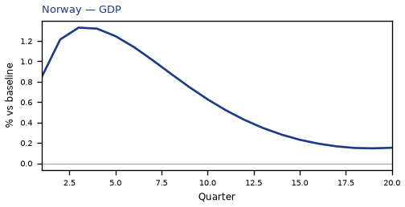
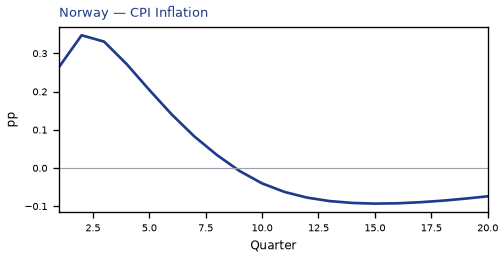
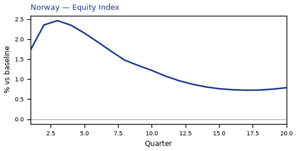
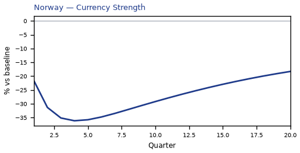
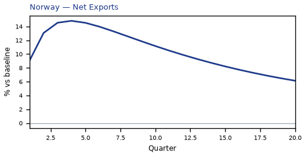
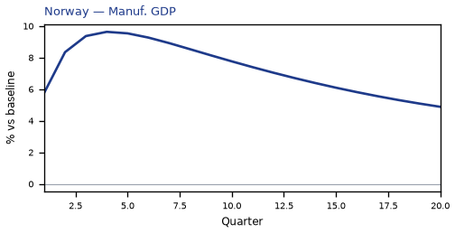
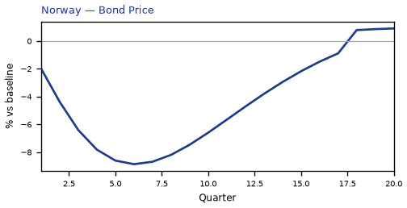
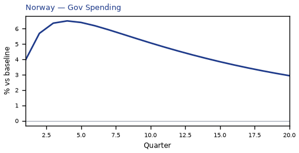
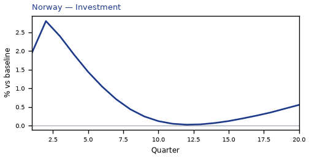
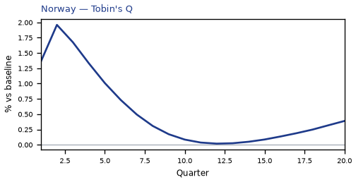
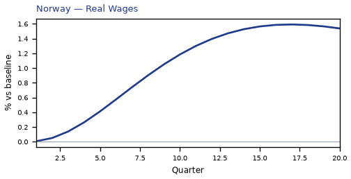

source=live · global_macro_v5 · contract v6 · Q1–Q20 JSON · not financial advice